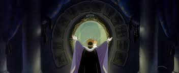

Pewnego dnia Killer di Pablo escobar usłyszał z ukrycia jak sor mówi do lustra te słowa: "Oh lustro, lustro kto jest najlepszym sorem na świecie?" Lustro odpowiedziało: "Na pewno nie ty XD" Sor jakub bardzo się oburzył i spytał:"Więc powiedz kto ja nie mam na ciebie czasu interesy idę robić." Lustro odpowiedziało:"Najlepszym sorem jest 'Czerwonka'." Jakub nie mógł w to uwierzyć jak ktoś może być lepszy od niego (w trakcie tego Killer di Pablo escobar miał z niego beke i powstrzymywał się od wybuchnięcia śmiechem)"Już wiem" powiedział sor "sprawię że wyleci".
